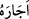

28. De ki: Allah beni ve beraberimdekileri (sizin istediğiniz üzere) yok etse veya
(öyle olmayıp da) bizi esirgese, (söyleyin bakalım) inkârcıları yakıcı azaptan
kurtaracak kimdir?
Ey yaratıkların en hayırlısı “De ki: (Söyleyin bakalım)” yâni bana haber verin
bakalım, sizler bu iddiâ ettiklerinize gözlerinizle görmüşçesine güven içinde iseniz”
demektir. Bâzı âlimlerin ifâdesine göre “görmek” haber vermenin sebebi olduğundan
görme fiili ile haber verme mânâsı kasdolunmuştur. Bâzı âlimlere göre haber verme
görme ile güçlenince, “haber ver” anlamına “eraeyte” kullanımı yaygınlaşmıştır.
“Allah beni ve beraberimdeki müminleri yok etse” yâni öldürse “veya bizi”
ecellerimizi geri ertelemek sûretiyle “esirgese, inkârcıları acı bir azaptan kurtaracak
kimdir?”
Burada öldürme fiilinin “helâk etme” fiiliyle ifâde olunması; kâfirlerin Peygamber
Efendimiz (s.a.)’e ve müminlere “helâk olsunlar” diye bedduâ etmelerinden, onların
felâketlere uğramalarını beklemelerinden, ardından da “Muhammed’in işi tamam olmaz,
o kalıcı değildir, tam tersine yakında yok olup gidecektir” demelerinden dolayıdır.
İşte onlara deniyor ki; Allah beni ve beraberimdekileri yok etse ve böylece sizin
düşündüğünüz hedef gerçekleşmiş olsa, ya da bizim ecellerimizi tehir etmek sûretiyle
bizi esirgese ve böylece bizim maksadımız gerçekleşmiş olsa, o zaman bizler Allah’ın
rahmeti yanında oluruz. İki güzellikten birini bekleriz. Ya helâk edilir cennete gideriz,
ya da umduğumuz ve dilediğimiz üzere bizlere yardım olunur ve gâlip geliriz. Sizler de
yaptıklarınızı yapmış olursunuz. Ancak bizim ölmemizde sizlerin ne gibi bir râhatı ve
nasıl bir menfaati olacaktır. Allah’ın ifâde buyurduğu gibi sizin sonunuz azaptır.
Kamus’ta ifâde olunduğuna göre Arapçada “
/ecârahû” fiili, “birini kurtardı”
anlamındadır. Âyette yer alan “azâb-ı elîm” ifâdesi ise “elemi çok şiddetli, elem verici
azap” demektir. Bütün bu açıklamaların ışığı altında âyete mânâ vermek gerekirse; biz
ister ölelim ister kalalım sizin başınıza o şiddetli elem verici azap geldiği zaman bu
azaptan sizi hiçbir kimse kurtaramayacaktır. Asıl kurtuluş îmanda ve amel-i sâlihtedir.
Burada kâfirlerin yerine “onlar” şeklindeki zamirin getirilmeyip de bizzat “kâfirîn”
şeklinde açıkça isimlerinin getirilmesi, aleyhine olmak üzere kâfirliklerinin tescil
edilmesi ve neden bu azaptan kurtulamayacaklarının sebebinin ifâde buyrulması içindir.
Bâzıları şöyle bir soru sorarlar: Allah’ın peygamberleri ve müminleri helâk
etmeyeceği bilindiği hâlde nasıl olur da âyette “Allah beni ve beraberimdekileri yok
etse...” şeklinde bir ifâde kullanılmıştır? Bu soruya cevap olarak diyebiliriz ki; bu
ifâdenin kullanılması, kâfirlere korku verilmesinde mubâlağa sağlamak içindir. Burada